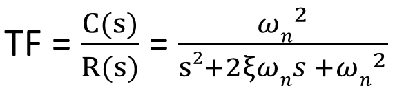
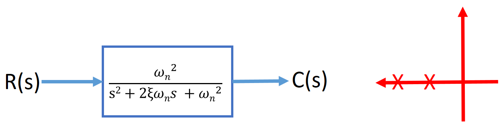
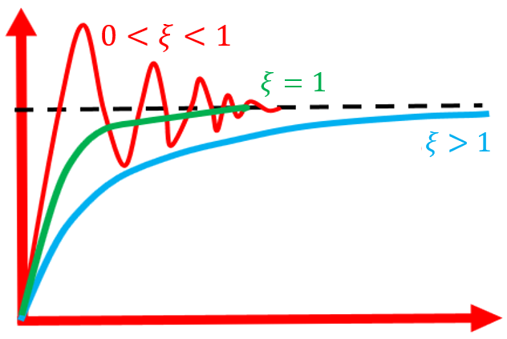

HOME BLOG EBOOKS ABOUT CONTACT SHOP
Second order systems are those systems which can be described using second order differential equations.The general form of the transfer function of a 2nd order system is,


In a first-order system varying the system parameters simply effects the speed of the response. But a second-order system exhibits a wide range of responses when the parameters are varied.
The behavior of the second-order system can then be described in terms of two parameters: the damping ratio (ξ) and the natural frequency (ωn). Every practical second order system takes a finite time to reach its steady state and during this period the system output oscillates. But practical systems also have a tendency to oppose this oscillatory nature of the system, this is called Damping. A factor called the Damping ratio(ξ) is used to quantify the extent of damping a system offers. In some systems it may be so low (ξ<1) that the oscillations sustain for a longer time. These are called Underdamped systems. While in some other systems, the damping factor(ξ>1) maybe very high that the system output will not oscillate at all. Instead the output follows an exponential path (like first order systems). These are called Overdamped systems.
In systems which offer no damping at all, the output response continues to oscillate without ever reaching a steady state value. The frequency of oscillations in such a case is called the natural frequency.

Depending on the value of ξ, the location of the closed loop poles varies as shown in the figure below.
Almost all real physical dynamic control systems are underdamped systems and hence they go through oscillations before settling at the desired steady-state value.